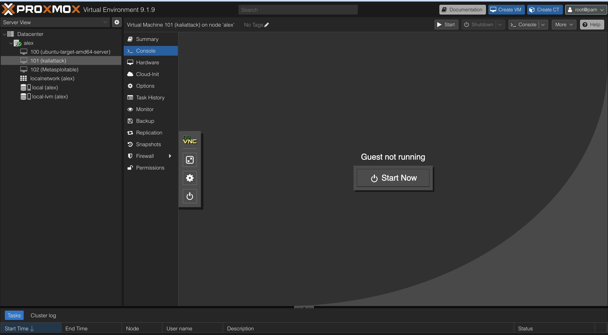

Proxmox Installation & Configuration
Installed Proxmox VE on an HP EliteDesk 800 G6 and configured
virtualization settings, networking, storage, and VM resources.
Topics Covered
- VM creation
- ISO mounting
- Boot order configuration
- VirtIO networking
- vmbr0 bridge setup
- CPU and RAM allocation

Honeypot & SIEM Integration Lab
Designed and deployed a complete cybersecurity monitoring environment using
Proxmox VE, Cowrie SSH Honeypot, and Wazuh SIEM. This project simulated
real-world SOC workflows by capturing attacker activity, forwarding logs
to a centralized SIEM platform, and analyzing security events through
the Wazuh Dashboard.

Skills Learned
- SIEM Administration
- Security Monitoring
- Threat Detection
- Incident Investigation
- Log Collection & Analysis
- Wazuh Agent Management
- Network Monitoring
- Linux Administration
- Virtualization with Proxmox
Tools Used
- Proxmox VE
- Ubuntu Server 24.04
- Kali Linux
- Cowrie SSH Honeypot
- Wazuh SIEM
- JSON Log Monitoring
Security Workflow
- Kali Linux Attack Simulation
- Cowrie Honeypot Captures Activity
- JSON Logs Generated
- Wazuh Agent Collects Logs
- Wazuh Manager Processes Events
- Dashboard Displays Security Alerts
Ubuntu Server Setup
Installed and configured Ubuntu Server to act as a monitored target system
inside the homelab environment.
Topics Covered
- SSH access
- Apache installation
- Firewall setup with UFW
- Service management
- Process monitoring
- Linux networking commands

Kali Linux VM Setup
Created and configured a Kali Linux VM for scanning,
reconnaissance practice, and networking analysis.
Topics Covered
- Kali installation
- VM troubleshooting
- Networking configuration
- Host discovery
- Nmap scanning basics

Wireshark & Packet Analysis
Practiced capturing and analyzing network traffic to better understand
protocols, ports, and communication between systems.
Topics Covered
- ICMP traffic
- TCP communication
- Packet filtering
- Ports and services
- Traffic monitoring concepts

Linux Commands & Troubleshooting
Practiced Linux administration and troubleshooting through hands-on
work inside Ubuntu Server and Kali Linux.
Commands Practiced
- ip a
- hostname -I
- systemctl
- journalctl
- ss -tulnp
- tcpdump
- ps aux
- top